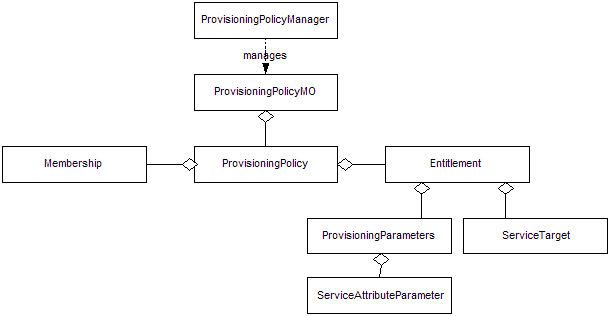
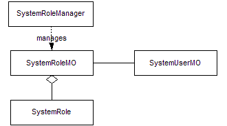
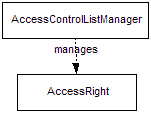
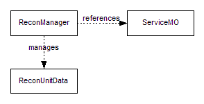

IBM Security
© Copyright International Business Machines
Corporation 2003, 2012. All rights reserved.
US Government Users
Restricted Rights – Use, duplication or disclosure restricted by
GSA ADP Schedule Contract with IBM Corp.
Purpose of this Document
Overview
API Description
API Example
API Migration
The Identity Manager provisioning platform is designed with extensibility as a primary goal. The platform architecture has defined several applications that perform different provisioning specific functions, such as password management, identity management, and account management. These applications have well defined external interfaces that can be used by clients to trigger their functionality. A great example of this would be the user interface that is deployed with the Identity Manager product. These interfaces, however, can be used by clients that would like a different entry point into the platform, such as a more customer specific user interface or a different application integrating its capabilities with the platform. This document describes the Application Programming Interface (API) that is available for interfacing to the provisioning applications.
The Application API has been developed to provide the developers
of custom front-ends to Identity Manager a portable and
backwards-compatible interface to the Identity Manager
applications.
The API consists of a set of java classes that
abstract the more commonly used functions of the provisioning
platform, such as identity management, password management, and
account management. The classes that make up this API are the same
classes the Identity Manager product uses for its out-of-the-box user
interface. In the platform architecture, the application tier makes
use of all the lower level services to implement the end-to-end
business logic involved in a provisioning action. This may require
workflow processes to execute (see the Workflow API), the data store
to be updated (see the Data Services API), or resources to be
provisioned (see the Service Provider API). These implementation
details of a provisioning action are encapsulated within the
application module to ensure to the client that the action will be
implemented correctly and that backwards compatibility with platform
upgrades will not be an issue.
One aspect of the business logic
behind a provisioning action is authorizing the caller to perform the
action by using the security mechanisms put in place the
Authorization module in the platform architecture. For this reason,
all Application API calls require user information about the caller
so that the proper authorization can take place. To make calls in an
unrestricted manner, the client must act as the administrator and
pass the administrator’s information into the API calls.
The API consists of a set of java classes that abstract the more
commonly used functions of the provisioning platform, such as
identity management, password management, and account management. All
of these classes can be found in the com.ibm.itim.apps
package and its sub-packages.
The Application API is
remoteable. This allows clients to communicate with the provisioning
platform without requiring co-location. To establish communications
with the provisioning platform, a context must be created. This
context is established using a set of classes that make up a
framework that can support connecting to different platform
deployment configurations easily without changes to the client. The
PlatformContext
class represents the context of a connection to a provisioning
platform. This class is merely an interface whose implementation may
be different based on the deployment configuration of the target
platform. The entry point for the client to establish the a platform
context is through the InitialPlatformContext
class. This class will ensure the proper implementations to the
context interfaces are constructed for the client by either using the
PlatformContextFactory
passed by name to it at construction time, or by looking up the
correct PlatformContextFactory class in the Identity
Manager.properties file.

Figure 1: Context Class Diagram
The Application API is secure and requires clients to authenticate to the platform. This authentication is performed through a Java Authentication and Authorization Service (JAAS) standard Java Pluggable Authentication Module (PAM) framework and API. This framework supports users authenticating to multiple applications. The applications might use different authentication mechanisms. Identity Manager has provided its own authentication mechanism based on its own authentication framework (see the Identity Manager Authentication API ). This mechanism is configured for use in the client environment through a security configuration file. The JAAS framework supports the different authentication modules through a series of Callbacks and CallbackHandlers. Identity Manager supports authentication through the use of standard WebSphere authentication mechanisms. The following snippet illustrates the use of JAAS to authenticate to WebSphere and the resulting subject is used throughout Identity Manager to perform tasks.
CallbackHandler handler = new WSCallbackHandlerImpl("jdoe", "secret"));
LoginContext lc = new LoginContext("WSLogin", handler);
lc.login();The preceding snippet is performing a password based authentication to WebSphere. This snippet assumes that the standard WSLogin application is registered as a login module.
The Application API also supports changing and resetting user passwords through challenge response. The API uses the ForgotPasswordManager class to perform this task. This class takes a PlatformContext and enables the retrieval of the challenge response questions. Before IBM Security Identity Manager 6.0, the PlatformCallbackHandler class was used to perform this task.
was invoked as an argument (with the â??D option), or the
Another concept common
to many of the Application API calls is the asynchronous request.
Many of the API calls are asynchronous, or non-blocking, and may take
minutes or even hours if human interaction is required to fulfill the
request (i.e., through an approval process). The Request class
represents an asynchronous request. Many calls will return a Request
object so that the client can check the status of their submission.
The RequestManager
class provides the client with a interface for querying, or locating,
requests they may not have a handle to currently.

Figure
2: Request Class Diagram
The classes that provide interfaces to the identity specific capabilities of the platform can be found in the com.ibm.itim.apps.identity package . The pattern followed by this API consists of a managed object that represents an entity to manage (i.e., account, role, person), a value object holding attribute information data about that entity, and a manager that an aggregate of other operations within the context of the type of managed object to manage (i.e., creating objects, validating objects, etc.).

Figure
3: Application Pattern Diagram
The use of the value object is key because all API calls are fulfilled by the platform with the most up-to-date information possible at the time of the call. This means the platform will query its data store on every request. If the client wishes to simply get a "snapshot" of the managed object’s information, only querying the data store once for performance reasons, obtaining the value object will best achieve the goal.

Figure
4: Identity Applications Class Diagram
The PersonMO
class provides the external interfaces for querying and manipulating
a person, or identity, in the system. The PersonManager
provides an aggregation of other identity related operations, such as
identity creation and fast access searches. The
SelfRegistrationManager
provides the specific operations related to self registration.
The
RoleMO
class provides the external interfaces for querying and manipulating
a role, dynamic or static, in the system. The RoleManager
provides an aggregation of other role related operations, such as
role validation.
The OrganizationalContainerMO
class provides the external interfaces for querying and manipulating
a node in the organizational tree (org chart) in the system. The
ContainerManager
provides an aggregation of other container related operations, such
as reorganizations.
The ChallengeResponseManager
provides the capability to self manage the challenge and responses
that can be used for authentication in lieu of a password.
The
classes that provide interfaces to the provisioning specific
capabilities of the platform can be found in the
com.ibm.itim.apps.provisioning
package . This package also follows the managed object pattern
with managers and value objects.

Figure
5: Provisioning Applications Class Diagram
The ServiceMO
class provides the external interfaces for querying and manipulating
a service in the system. This class can also represent a "hosted",
or leased, service provided by an application service provider (ASP)
in the system. The ServiceManager
provides an aggregation of other service related operations, such as
service communications testing.
The AccountMO
class provides the external interfaces for querying and manipulating
an account in the system. The AccountManager
provides an aggregation of other account related operations, such as
account validation and the determination of authorized services. The
PasswordManager
provides password validation, generation, and change operations.
The
com.ibm.itim.apps.search
package holds the classes that provide general search utilities
for managed objects, such as people, services, and accounts. Since
each of these objects can have extensible schemas associated with
them, the query interfaces provided in the package are very flexible
and support extensible filtering.

Figure
6: Search Application Class Diagram
The SearchMO
class represents a managed object search. It provides the interface
for defining the parameters of the search, such as a flexible
string-based filter, sorting details, and the scope of the search.
The SearchResultsMO
holds the results and provides interfaces for retrieving the results
as a whole or by pages. There are also interfaces for re-sorting the
results. To reduce overhead of repetitive calls back the platform to
obtain information about each object returned from a search, the
results are made up of value objects directly instead of managed
objects. It is still easy to obtain managed objects if needed by
simply extracting the distinguished name from the value object.
The
com.ibm.itim.apps.workflow
package holds the classes that provide workflow control and
auditing capabilities. These capabilities include searching for
pending and historical processes, and retrieving and completing
participants’ workflow assignments.

Figure 7: Workflow Application Class Diagram
The WorkflowProcessMO class provides the external interfaces for
querying and manipulating a workflow process in the system. The
WorkflowManager provides some convenient query operations for
workflow processes.
The WorkflowActivityMO
class provides the external interfaces for querying and manipulating
a workflow activity in the system. These activities are part of a
workflow process. They can be found by querying the
WorkflowProcessMO.
The WorkflowAssignmentMO
class provides the external interfaces for querying and manipulating
a workflow assignment in the system. An assignment provides a link
between a workflow activity and a workflow resource. The workflow
resource is "assigned" the workflow activity. These assignments
can be found by querying either the ActivityMO or the
WorkflowResourceMO
.
The WorkflowResourceMO interface provides the external
interface for querying assignments for a workflow resource. The
HumanResourceMO
represents a human workflow participant that implements this
interface.
The WorkflowSearchMO
class represents a workflow process search. It provides the interface
for defining the parameters of the search through a workflow query
statement. The WorkflowSearchResultsMO
holds the results and provides interfaces for retrieving the results
as a whole or by pages. There are also interfaces for re-sorting the
results. To reduce overhead of repetitive calls back the platform to
obtain information about each object returned from a search, the
results are made up of value objects (WorkflowProcesses) directly
instead of managed objects (WorkflowProcessMOs). It is still easy to
obtain managed objects if needed by simply extracting the ID from the
value object.
The com.ibm.itim.apps.lifecycle
package provides lifecycle management capabilities on supported
business domain objects, including Person and Account via the
LifecycleManager
class.

Figure
8: Provisioning Policy Class Diagram
The ProvisioningPolicyManager class provides the external interfaces for querying and manipulating provisioning policy(ies) in the system. This class should be used to search for provisioning policy in the system rather than using SearchMO. The ProvisioningPolicyMO provides an aggregation of other policy related operations, such as getting parent container or organization. It also provides the external interfaces for querying and manipulating a specific provisioning policy in the system.

Figure
9: ITIM Group Class Diagram
The SystemRoleManager class provides the external interfaces for querying and creating ITIM group in the system. This class should be used to search for ITIM group in the system rather than using SearchMO. The SystemRoleMO provides an aggregation of other ITIM group related operations such as adding and removing member, and removing ITIM group.

Figure
10: Access Control List Class Diagram
The AccessControlListManager class provides the external interfaces for querying and manipulating access right(s) in the system. This class should be used to list access control list in the system rather than using SearchMO.

Figure
11: Reconciliation Class Diagram
The ReconManager class provides the external interfaces for querying and manipulating reconciliation data in the system for a referenced service. The ReconUnitData is the value object that holds reconciliation unit data.
try {
// create platform context
Hashtable<String, String> env = new Hashtable<String, String>();
env.put(InitialPlatformContext.CONTEXT_FACTORY,
"com.ibm.itim.apps.impl.websphere.WebSpherePlatformContextFactory");
env.put(PlatformContext.PLATFORM_URL, "iiop://localhost");
PlatformContext platform = new InitialPlatformContext(env);
// create authentication handler
CallbackHandler handler = new WSCallbackHandlerImpl("jdoe", "secret"));
// attempt authentication
LoginContext lc = new LoginContext("WSLogin", handler);
lc.login();
// create manager
PersonManager mgr = new PersonManager(platform, lc.getSubject());
// find user
Collection people = mgr.getPeople("uid", "ssmith", null);
// assume only one ssmith for this example
PersonMO person = (PersonMO) people.iterator().next();
if (person != null) {
Person valueObject = person.getData();
// update email address locally
valueObject.setMail("ssmith@acme.com");
// commit change immediately
person.update(valueObject, new Date());
}
} catch (AccountExpiredException ex) {
System.out.println(ex.getMessage());
} catch (CredentialExpiredException ex) {
System.out.println(ex.getMessage());
} catch (FailedLoginException ex) {
System.out.println(ex.getMessage());
} catch (LoginException ex) {
System.out.println(ex.getMessage());
} catch (RemoteException ex) {
System.out.println(ex.getMessage());
} catch (AuthorizationException ex) {
System.out.println(ex.getMessage());
} catch (ApplicationException ex) {
System.out.println(ex.getMessage());
}
In the supported versions of Identity Manager, the custom JAAS configuration (ITIM) is not used anymore for authentication.. The WebSphere Application Server application login configuration WSLogin must be used to authenticate the user to the user repository configured in WebSphere Application Server. This example shows how to migrate the Tivoli Identity Manager version 5.1 code to latest version of Identity Manager code.
// In version 5.1,
PlatformCallbackHandler handler = new PlatformCallbackHandler("jdoe", "secret");
handler.setPlatformContext(platform);
LoginContext lc = new LoginContext("ITIM", handler);
lc.login();
PersonManager mgr = new PersonManger(platform, lc.getSubject());
// In version 10.0,
// if Identity Manager is configured with the separate security domain,
// the realm name of the security domain must be passed to the callback handler.
// NOTE: The com.ibm.websphere.security.auth.callback.WSCallbackHandlerImpl class
// is part of WebSphere Application Server runtime library (com.ibm.ws.runtime.jar).
// This jar file must be in the classpath to use WSCallbackHandlerImpl class.
// The com.ibm.ws.runtime.jar is in the WAS_HOME/plugins directory.
// WAS_HOME is the directory where WebSphere Application Server is installed.
// For example,
// C:\Program Files\IBM\WebSphere\AppServer is the default WAS_HOME directory
// for Windows operating system.
// For more information about WSCallbackHandlerImpl class, see the IBM WebSphere
// Application Server information center documentation at
// http://publib.boulder.ibm.com/infocenter/wasinfo/v7r0/index.jsp.
CallbackHandler handler = new WSCallbackHandlerImpl("jdoe", "realmName", "secret");
LoginContext lc = new LoginContext("WSLogin", handler);
lc.login();
PersonManager mgr = new PersonManger(platform, lc.getSubject());